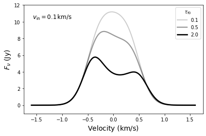
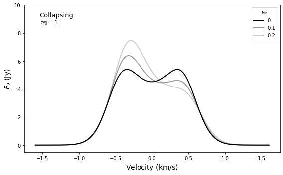
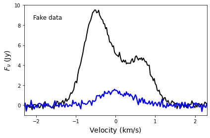

ASTR777 Star and Planet Formation Problem Set 3
Contents
ASTR777 Star and Planet Formation Problem Set 3#
two layer slab model of core collapse#
import numpy as np
import matplotlib.pyplot as plt
from astropy import units as u
from astropy import constants as c
%matplotlib inline
# blackbody
def Bnu(nu,T):
B = (2*c.h*(nu*u.Hz)**3 / c.c**2 * (np.exp(c.h*nu*u.Hz/(c.k_B*T*u.K)) - 1)**-1)
return B.cgs.value
radiative transfer equation from the lecture notes#
\[I_\nu = B_\nu(T_f)(1-e^{-\tau_f}) + B_\nu(T_b)(1-e^{-\tau_b})e^{-\tau_f}\]
Note that the observed quantity is flux density, $\(F_\nu = I_\nu \Omega,\)\( where \)\Omega$ is the solid angle over which we observe the source.
# the two-layer model
def Inu(nu0, v, v_in, sigma, T_b, tau_b, T_f, tau_f):
nu = nu0 * (1 - v / 2.9978e5)
tau_nub = tau_b / np.exp(v**2/(2*sigma**2))
tau_nuf = tau_f / np.exp((v-v_in)**2/(2*sigma**2))
Inu = Bnu(nu, T_b) * (1 - np.exp(-tau_nub)) * np.exp(-tau_nuf) + Bnu(nu, T_f) * (1 - np.exp(-tau_nuf))
return(Inu)
def plot_profile1():
Tk = 10 * u.K
a = np.sqrt(c.k_B * Tk / (2*c.m_p)) # thermal speed of H2
sigma = 0.3 # turbulent speed of the core
vmax = 1.6
dv = 0.025
v = np.arange(-vmax, vmax+dv, dv)
T_f = 5
T_b = 20
tau_f = 1
tau_b = 2
v_in = 0.1
# aperture
theta = 10 # beam FWHM arcsec
Omega = 2*np.pi*(theta/2.355)**2*2.35e-11 # solid angle in steradians
nu0 = 97.981e9 # CS 2-1
fig = plt.figure(figsize=(6,4))
ax = fig.add_subplot(111)
ax.set_xlim(-1.75, 1.75)
ax.set_ylim(-1.0, 12)
ax.set_xlabel(r'${\rm Velocity}\ {\rm (km/s)}$', fontsize=14)
ax.set_ylabel(r'$F_\nu\ {\rm (Jy)}$', fontsize=14)
tau_b = 2
Fnu = Inu(nu0, v, 0.1, sigma, T_b, tau_b, T_f, 0.1) * Omega * 1e23
ax.plot(v, Fnu, color='black', lw=2, ls='-', alpha=0.2, label='0.1')
Fnu = Inu(nu0, v, 0.1, sigma, T_b, tau_b, T_f, 0.5) * Omega * 1e23
ax.plot(v, Fnu, color='black', lw=2.3, ls='-', alpha=0.4, label='0.5')
Fnu = Inu(nu0, v, 0.1, sigma, T_b, tau_b, T_f, 2) * Omega * 1e23
ax.plot(v, Fnu, color='black', lw=2.6, ls='-', alpha=1, label='2.0')
ax.legend(loc=1, title=r'$\tau_{\rm f0}$')
ax.text(0.05, 0.87, r'$v_{\rm in} = 0.1\,{\rm km/s}$', fontsize=12, transform=ax.transAxes)
fig.tight_layout(rect=[0.0,0.0,1.0,1.0])
plt.savefig('infall1.pdf')
# question 2
plot_profile1()

def plot_profile2():
Tk = 10 * u.K
a = np.sqrt(c.k_B * Tk / (2*c.m_p)) # thermal
sigma = 0.3 # turbulent
vmax = 1.6
dv = 0.025
v = np.arange(-vmax, vmax+dv, dv)
T_f = 5
T_b = 20
tau_f = 1.5
tau_b = 2
v_in = 0.1
# aperture
theta = 10 # beam FWHM arcsec
Omega = 2*np.pi*(theta/2.355)**2*2.35e-11 # solid angle in steradians
nu0 = 97.981e9 # CS 2-1
fig = plt.figure(figsize=(8,5))
ax1 = fig.add_subplot(111)
ax1.set_xlim(-1.75, 1.75)
ax1.set_ylim(-0.5, 10.0)
ax1.set_xlabel(r'${\rm Velocity}\ {\rm (km/s)}$', fontsize=14)
ax1.set_ylabel(r'$F_\nu\ {\rm (Jy)}$', fontsize=14)
Fnu = Inu(nu0, v, 0.0, sigma, T_b, tau_b, T_f, tau_f) * Omega * 1e23
ax1.plot(v, Fnu, color='black', lw=2, ls='-', alpha=1, label='0')
Fnu = Inu(nu0, v, 0.1, sigma, T_b, tau_b, T_f, tau_f) * Omega * 1e23
ax1.plot(v, Fnu, color='black', lw=2, ls='-', alpha=0.4, label='0.1')
Fnu = Inu(nu0, v, 0.2, sigma, T_b, tau_b, T_f, tau_f) * Omega * 1e23
ax1.plot(v, Fnu, color='black', lw=2, ls='-', alpha=0.2, label='0.2')
ax1.legend(loc=1, title=r'$v_{\rm in}$')
ax1.text(0.06, 0.92, 'Collapsing', fontsize=13, transform=ax1.transAxes)
#ax1.text(0.06, 0.87, r'$\tau_{\rm b} = 2$', fontsize=11, transform=ax1.transAxes)
ax1.text(0.06, 0.87, r'$\tau_{\rm f0} = 1$', fontsize=11, transform=ax1.transAxes)
fig.tight_layout(rect=[0.0,0.0,1.0,1.0])
plt.savefig('infall2.pdf')
# question 3
plot_profile2()

def fake_spectra():
vmax = 2.5
dv = 0.025
v = np.arange(-vmax, vmax+dv, dv)
T_f = 5
T_b = 20
tau_b = 4
# aperture
theta = 10 # beam FWHM arcsec
Omega = 2*np.pi*(theta/2.355)**2*2.35e-11 # solid angle in steradians
nu0 = 97.981e9 # CS 2-1
fig = plt.figure(figsize=(6,4))
ax = fig.add_subplot(111)
ax.set_xlim(-2.3, 2.3)
ax.set_ylim(-1.0, 10)
ax.set_xlabel(r'${\rm Velocity}\ {\rm (km/s)}$', fontsize=14)
ax.set_ylabel(r'$F_\nu\ {\rm (Jy)}$', fontsize=14)
tau_f = 2.7
v_in = 0.27
sigma = 0.4
nv = v.size
rms = 0.2
Fnu_thick = Inu(nu0, v, v_in, sigma, T_b, tau_b, T_f, 1.7) * Omega * 1e23
Fnu_thick = np.asarray(Fnu_thick) + np.random.normal(loc=0, scale=rms, size=nv)
ax.plot(v, Fnu_thick, color='black', lw=2, ls='-', alpha=1, label='thick')
Fnu_thin = Inu(nu0, v, v_in, sigma, T_b, 0.1, T_f, 0.1) * Omega * 1e23
Fnu_thin = np.asarray(Fnu_thin) + np.random.normal(loc=0, scale=rms, size=nv)
ax.plot(v, Fnu_thin, color='blue', lw=2.3, ls='-', alpha=1, label='thin')
ax.text(0.05, 0.87, r'Fake data', fontsize=12, transform=ax.transAxes)
fig.tight_layout(rect=[0.0,0.0,1.0,1.0])
plt.savefig('fake_spectra.pdf')
np.savetxt('collapse_spectra.txt', np.column_stack([v,Fnu_thick,Fnu_thin]), fmt='%6.2f, %8.4f, %8.4f')
# create fake spectra
fake_spectra()

def gauss(x, *p):
A, mu, sigma = p
return A*np.exp(-0.5*((x-mu)/sigma)**2)
def infall_profile(x, *p):
# fixed parameters
T_f = 5
T_b = 20
tau_b = 4
# fitted parameters
v_in, sigma, tau_f = p
#v_in, sigma, tau_f, T_f, T_b, tau_b = p
# same aperture as before implicitly assumed
theta = 10 # beam FWHM arcsec
Omega = 2*np.pi*(theta/2.355)**2*2.35e-11 # solid angle in steradians
nu0 = 97.981e9 # CS 2-1
return Inu(nu0, x, v_in, sigma, T_b, tau_b, T_f, tau_f) * Omega * 1e23
def fit_spectra():
# fitting method
from scipy.optimize import curve_fit
# read in data
v, Fthick, Fthin = np.loadtxt('collapse_spectra.txt', delimiter=',', unpack=True)
fig = plt.figure(figsize=(6,4))
ax = fig.add_subplot(111)
ax.set_xlim(-2.3, 2.3)
ax.set_ylim(-1.0, 10)
ax.set_xlabel(r'${\rm Velocity}\ {\rm (km/s)}$', fontsize=14)
ax.set_ylabel(r'$F_\nu\ {\rm (Jy)}$', fontsize=14)
ax.plot(v, Fthick, color='black', lw=2, ls='-', alpha=1, label='thick')
ax.plot(v, Fthin, color='blue', lw=2, ls='-', alpha=1, label='thin')
ax.text(0.05, 0.87, r'Fitted data', fontsize=12, transform=ax.transAxes)
# fit gaussian to thin line, eyeballing a guess for amplitude, mean, and sigma
p0 = [1.5, 0., 0.5]
p, pcov = curve_fit(gauss, v, Fthin, p0=p0)
Fthin_fit = gauss(v, *p)
sigma = p[2]
print('Optically thin fit sigma = {0:5.3f} km/s'.format(sigma))
ax.plot(v, Fthin_fit, color='red', lw=5, ls='--', alpha=0.5)
# fit infall profile to thick line eyeballing v_in and tau_f
p0 = [0.3, sigma, 1]
# fits remarkably well even if we let all the parameters vary and no bounds!!!
#p0 = [0.3, sigma, 1, 5, 20, 4]
p, pcov = curve_fit(infall_profile, v, Fthick, p0=p0)#, bounds=([0,0.9*sigma,0],[2,1.1*sigma,5]))
Fthick_fit = infall_profile(v, *p)
v_in = p[0]
print(f'Infall speed = {v_in:5.3f} km/s')
ax.plot(v, Fthick_fit, color='red', lw=5, ls='--', alpha=0.5)
#fig.tight_layout(rect=[0.0,0.0,1.0,1.0])
#plt.savefig('fake_spectra.pdf')
# question 4
fit_spectra()
Optically thin fit sigma = 0.415 km/s
Infall speed = 0.268 km/s